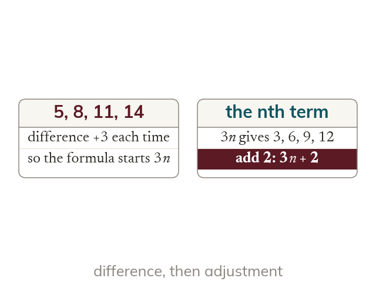
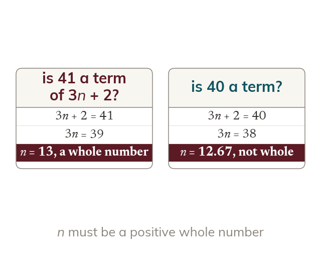
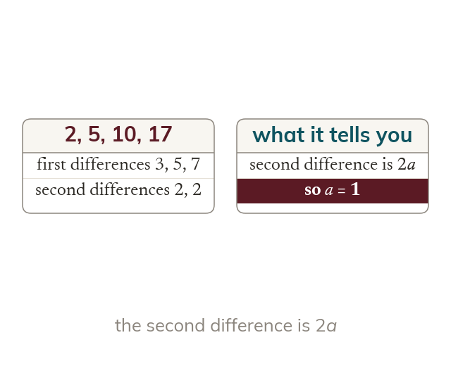
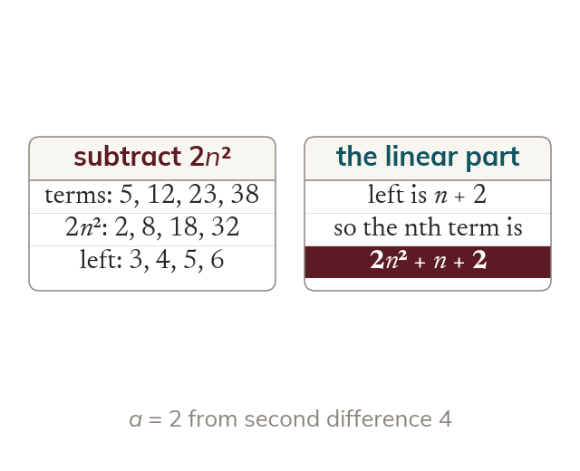

Chapter 4 · Equations, inequalities and sequences · Lesson 8 of 10
Linear and Quadratic nth Terms
A formula for the nth term lets you jump straight to the 100th term, or to the term that equals a target, without writing out the list, and the same difference method reaches quadratic sequences too.
By the end you’ll know…
A linear sequence has nth term an + b with a constant first difference.
A quadratic sequence has nth term an² + bn + c with a constant second difference equal to 2a.
By the end you can
G6Find terms from an nth-term formula and form an equation in n to find which term meets a given condition, rejecting invalid values of n.
G8Find the nth term of a linear sequence, and of a quadratic sequence using second differences.
Work down the page at your own pace. Write every answer in your book first, then click to check it.
01
Do Now
About 5 minutes
1
If the nth term of a sequence is 3n + 2, find the 5th term.
17 (3 × 5 + 2).
Remember these?
LAST LESSONProve that the sum of any two odd numbers is even.
(2m + 1) + (2n + 1) = 2(m + n + 1), a multiple of 2.
LAST WEEKSimplify (8x⁶)⁽¹³⁾.
2x².
LAST TERMWhy are histogram bar heights frequency densities, not frequencies?
Class widths differ - area, not height, shows frequency.
LAST YEARFind the magnitude of 5-12.
√(25 + 144) = 13.
02
Learn
Read each card, then follow the worked examples one step at a time.

A linear nth term
The common difference is the coefficient of n. Comparing 3n with the terms shows what to add.
The common difference is the coefficient of n, so a difference of 3 starts the formula with 3n. Comparing 3n with the terms shows what to add on.

Testing a term
Setting the nth term equal to the number gives n. The number is a term only if n is a positive whole number.
To test whether a number is in a sequence, set the nth term equal to it and solve for n. The number is a term only if n comes out as a positive whole number.
WORKED EXAMPLE A
Find the nth term of 5, 8, 11, 14, ...
The common difference is the coefficient of n.
The difference is 3, so the nth term starts 3n
3n gives 3, 6, 9, 12, and the terms are 2 more
The nth term is 3n + 2
WORKED EXAMPLE B
The nth term is 4n - 3. Which term is 77, and is 50 a term?
Setting the formula equal to the number gives n, which must be a whole number.
Set equal to 774n - 3 = 77
4n = 80
n = 20
So 77 is the 20th term
For 504n = 53 gives n = 13.25, not whole, so 50 is not a term
YOUR TURN · a
Find the nth term of 20, 17, 14, 11, ...
The difference is -3, so start with -3n. -3n gives -3, -6, -9, -12, and the terms are 23 more, so the nth term is -3n + 23.
YOUR TURN · b
The nth term is 5n - 2. Which term is 83, and is 40 a term?
5n - 2 = 83 gives 5n = 85, so n = 17 and 83 is the 17th term. For 40: 5n = 42, n = 8.4, so 40 is not a term.
03
Check your understanding
Pick an answer. If it's wrong, the feedback tells you which mistake it was.
Which statement about nth terms is correct?
Yes. A constant first difference gives a linear sequence with nth term an + b.
Not quite. A constant second difference means a quadratic nth term.
Not quite. The coefficient of n is the common difference, and the constant is found by comparing.
Not quite. The second difference is 2a, so a is half of it.
Find the nth term of 7, 11, 15, 19, ...
Not quite.4n gives 4, 8, 12, 16. The terms are 3 more, so the constant is 3.
Not quite. The terms are 3 more than 4n, so add 3.
Yes.4n gives 4, 8, 12, 16 and the terms are 3 more.
Not quite. The difference 4 is the coefficient of n.
The nth term is 4n - 3. Is 50 a term?
Not quite. A position must be a whole number, so n = 13.25 means 50 is not a term.
Not quite. Terms are specific positions. 50 is not equal to any of them.
Yes.4n - 3 = 50 gives n = 13.25, which is not a position in the sequence.
Not quite.n = 13.25 is positive. The problem is that it is not whole.
04
Practise
mark as you go
Checkpoint. Find the nth term of 9, 14, 19, 24, ... Then find which term equals 104, and say whether 100 is a term.Show your teacher before you go on
From your textbook
Section 4.8 Sequences (p108-112). Exercise questions that find terms from an nth-term formula and find which term meets a condition.
05
Learn
Read each card, then follow the worked examples one step at a time.

Second differences
In a quadratic sequence, the second differences are constant. The second difference equals 2a. So a is half of the second difference.
In a quadratic sequence the first differences change but the second differences are constant, and the second difference equals 2a. So a is half of the second difference.

The full method
Subtracting an² leaves a linear sequence. That gives the rest of the formula. Check with the first two terms.
Subtract the an² terms from the sequence and the leftover is linear, which gives the rest of the formula. Check the formula with the first two terms.
WORKED EXAMPLE C
Find the nth term of 3, 9, 19, 33, ...
Find a from the second difference, then subtract the n² terms.
First differences 6, 10, 14, second differences 4, so 2a = 4 and a = 2
Subtract 2n^2 (2, 8, 18, 32) from the terms1, 1, 1, 1
The nth term is 2n² + 1
WORKED EXAMPLE D
Find the nth term of 4, 11, 22, 37, ...
The leftover after subtracting n² terms is itself a linear sequence.
Second differences are 4, so a = 2
Subtract 2n^22, 3, 4, 5, which is n + 1
The nth term is 2n² + n + 1
YOUR TURN · c
Find the nth term of 2, 6, 12, 20, ...
First differences 4, 6, 8 and second differences 2, so a = 1. Subtract n² (1, 4, 9, 16): 1, 2, 3, 4, which is n. The nth term is n² + n.
YOUR TURN · d
Find the nth term of 1, 7, 17, 31, ...
Second differences are 4, so a = 2. Subtract 2n² (2, 8, 18, 32): -1, -1, -1, -1. The nth term is 2n² - 1.
06
Check your understanding
Pick an answer. If it's wrong, the feedback tells you which mistake it was.
A quadratic sequence has a constant second difference of 6. What is a?
Not quite. The second difference is 2a, so a = 6 ÷ 2.
Yes.2a = 6 gives a = 3.
Not quite. The second difference is 2a, so halve it.
Not quite. The second difference is 2a, so a = 6 ÷ 2 = 3.
Find the nth term of 3, 8, 15, 24, ...
Not quite.n² gives 1, 4, 9, 16, and the leftover 2, 4, 6, 8 is 2n.
Not quite. The leftover 2, 4, 6, 8 is not constant. It is 2n.
Yes. Second difference 2 gives a = 1, and the leftover 2, 4, 6, 8 is 2n.
Not quite. The second difference is 2a, so a = 1, not 2.
Find the nth term of 6, 11, 18, 27, ...
Not quite. The leftover 5, 7, 9, 11 is 2n + 3, not a constant 5.
Yes.a = 1, and the leftover 5, 7, 9, 11 is 2n + 3.
Not quite. The second difference 2 means a = 1.
Not quite. The leftover 5, 7, 9, 11 changes by 2 each time, so it has an n term.
07
Practise
mark as you go
Checkpoint. Find the nth term of 4, 10, 18, 28, ... and use it to find the 10th term.Show your teacher before you go on
From your textbook
Section 4.8 Sequences (p108-112). Exercise questions that find the nth term of linear sequences and of quadratic sequences using second differences.
08
Exit ticket
On paper, on your own, then check
1
State what is true about the second differences of a quadratic sequence.
They are constant. The second difference is 2a, so a is half of it.
2
Find the nth term of 11, 8, 5, 2, ...
The difference is -3, so start with -3n -3n gives -3, -6, -9, -12, so add 14 nth term = -3n + 14
3
Find the nth term of 5, 9, 15, 23, ...
Second difference 2, so a = 1 Subtract n²: 4, 5, 6, 7, which is n + 3 nth term = n² + n + 3
Finished? Next lesson: 4.9 Limiting Value of a Sequence.
Practise more
After the lesson, or whenever you want more
Dr Frost
Log in, then search for a code to practise that skill.
205aDetermine the nth term formula for an arithmetic sequence by comparison to an
369hDetermine the nth term formula of a quadratic sequence in the form an²+bn+c